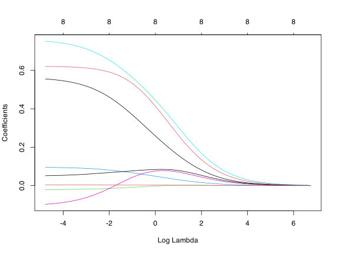

Multicollinearity: a linear combination of variables is nearly equal to another variable.
so \(\X\) is ill-conditioned
so some singular values \(d_j\approx 0\)
so \(d^{-2}_j\) is large
so \(\bls\) has large, unstable values; i.e., large variance
How to stop large, unstable values of \(\widehat{\beta}\)?
Idea: constrain the values of \(\beta\) to be small. For \(s > 0\): \[
\minimize_\beta \underbrace{\frac{1}{n}\|\y - \X\beta\|_2^2}_{\text{objective function}} \quad \st \underbrace{\|\beta\|_2^2 < s}_{\text{constraint}}.
\]
Mitigates the issue of multicollinearity (ill-conditioned \(\X\))!
Tuning the regularization weight \(\lambda\)
Use cross-validation (it’s built into glmnet if you use cv.glmnet!)
plot shows mean CV estimate \(\pm\) standard error
Left line is minimum risk estimate; right is the largest \(\lambda\) within 1\(\sigma\)
ridge <-cv.glmnet(x = X, y = Y, alpha =0, lambda.min.ratio = .00001)plot(ridge, main ="Ridge")

Ridge regression: summary
Ridge regression addresses multicollinearity by preventing division by near-zero numbers
Conclusion
\(\bls = (\X^{\top}\X)^{-1}\X^\top \y\) can be unstable, while \(\brl=(\X^{\top}\X + \lambda \mathbf{I})^{-1}\X^\top\y\) is not.
Aside
Engineering approach to solving linear systems is to always do this with small \(\lambda\). The thinking is about the numerics rather than the statistics.
Which \(\lambda\) to use?
Computational
Use CV and pick the \(\lambda\) that makes this smallest (maybe within \(1\sigma\)).
Intuition (bias)
As \(\lambda\rightarrow\infty\), bias ⬆
Intuition (variance)
As \(\lambda\rightarrow\infty\), variance ⬇
Regularization for variable selection?
Ridge regression is a regularized approach to prediction.
nice bias/variance tradeoff
closed-form / easy-to-compute solution
no predictor variable selection.
(NB: picking a \(\lambda\) is still model selection)
Is there a regularization approach to variable selection?
e.g., best (in-sample) linear regression model of size \(s\):
\(\minimize \frac{1}{n}||\y-\X\beta||_2^2 \ \st\ (\text{\# of nonzero $\beta_j$}) \leq s\)
That is a super nasty optimization. What to do?…
Next time…
The lasso, interpolating variable selection and model selection